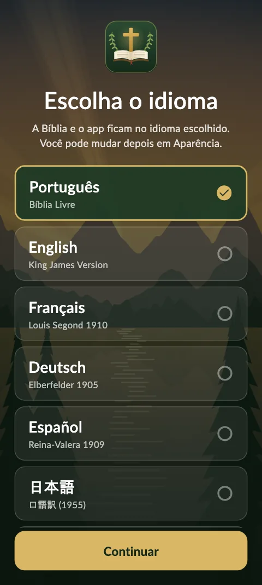
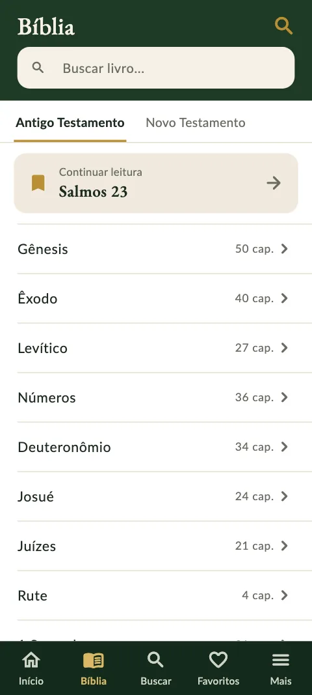
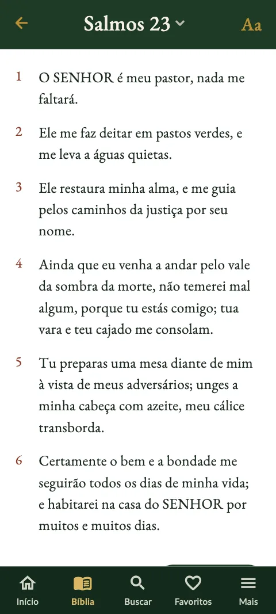
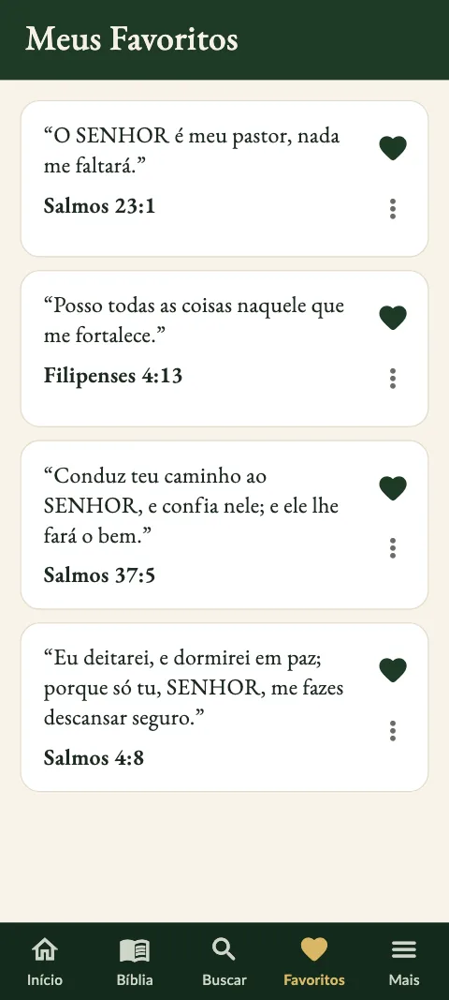
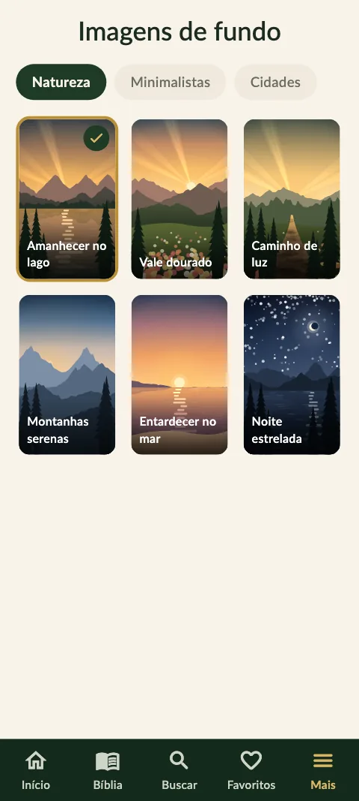
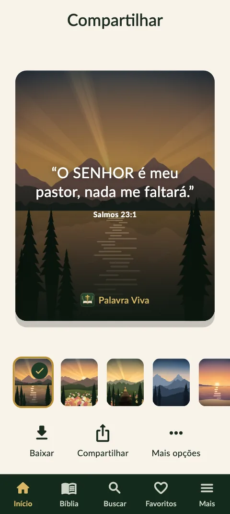
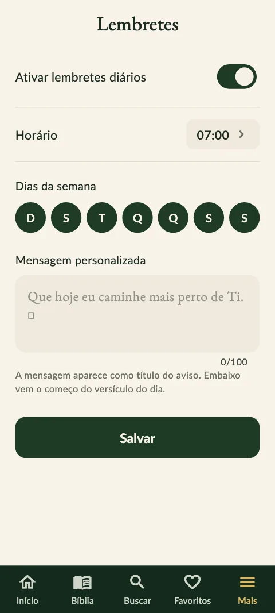

A Bíblia sempre com você
Palavra Viva
Mais que um aplicativo, uma companhia diária: um versículo novo todos os dias e a Bíblia inteira na palma da mão.
Sobre o app
O Palavra Viva foi criado para ajudar você a estar mais perto de Deus todos os dias. Ao abrir o app, você encontra o versículo do dia sobre uma paisagem serena e, com um toque, pode ler o capítulo inteiro, guardar o versículo nos favoritos ou compartilhá-lo como imagem.
“Lâmpada para os meus pés é a tua palavra, e luz para o meu caminho.”
Salmos 119:105O que você encontra
Versículo do dia
Um versículo novo a cada dia, e um calendário para rever os dos dias anteriores.
A Bíblia completa
Os 66 livros, do Antigo e do Novo Testamento, com tamanho de letra ajustável e "Continuar leitura".
Busca por palavra e tema
Encontre versículos sem se preocupar com acentos, ou escolha um tema: Ansiedade, Paz, Fé, Esperança…
Favoritos
Guarde os versículos que tocam você e volte a eles quando quiser.
Lembrete às 7h
Todo dia, o começo do versículo do dia chega como aviso. Você escolhe o horário, os dias e a mensagem.
8 idiomas
Português, English, Français, Deutsch, Español, 日本語, Italiano e 中文 — o app e a Bíblia no seu idioma.
Imagens para compartilhar
Transforme um versículo em imagem, com 12 paisagens, e envie para quem você ama.
Tema claro e escuro
Leia com conforto de dia e à noite, ou deixe seguir o celular.
Sem cadastro
Sem conta, sem anúncios: seus favoritos e lembretes ficam só no seu aparelho.
Veja o app






